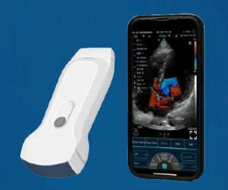
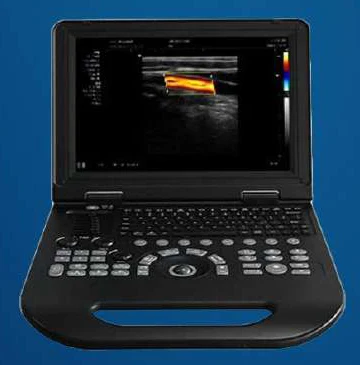
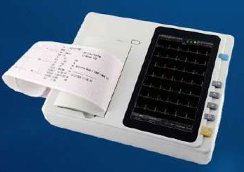
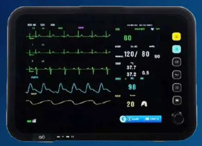
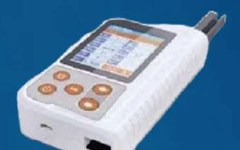
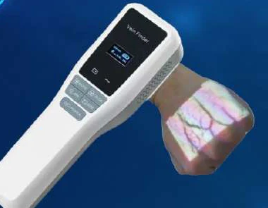
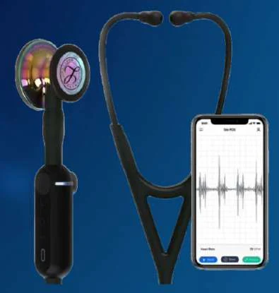
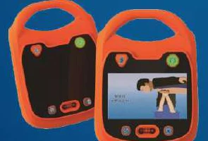

Dr. Tamir Doljinsuren Должинсүрэнгийн Тамир
Medical doctor, researcher and healthcare manager with 15+ years across clinical medicine, hospital management, public health and international health programs. Эмнэлзүй, эмнэлгийн удирдлага, нийгмийн эрүүл мэнд, олон улсын эрүүл мэндийн хөтөлбөрт 15 гаруй жил ажилласан хүний их эмч, судлаач, эрүүл мэндийн менежер.
ProfileТанилцуулга
A physician who has worked at the bedside, in the operating room, in the laboratory and at the head of a health center, in Mongolia and abroad. Монголд болон гадаадад өвчтөний орны дэргэд, мэс заслын өрөөнд, лабораторид, эрүүл мэндийн төвийн удирдлагад ажилласан эмч.
Skilled in clinical research, program coordination and bringing international healthcare standards into practice. Experienced in leading teams, managing hospitals and working across countries, from Japan and South Korea to the United States and Southeast Asia. Клиник судалгаа, төсөл хөтөлбөрийн зохицуулалт, олон улсын эрүүл мэндийн стандартыг нэвтрүүлэх чиглэлээр мэргэшсэн. Хамт олныг манлайлах, эмнэлэг удирдах, Япон, БНСУ, АНУ, Зүүн Өмнөд Азийн орнуудтай хамтран ажиллах туршлагатай. Багаар ажиллах, шинийг нэвтрүүлэх, байгууллагын дотоод журмыг чанд мөрдөх, цаг баримтлах зарчмыг эрхэмлэдэг.
ExpertiseУр чадвар 15
Clinical expertiseЭмнэлзүйн мэргэшил
- Patient careӨвчтөний тусламж үйлчилгээ
- Cardiovascular surgeryЗүрх судасны мэс засал
- ChemotherapyХимийн эмчилгээ
- RadiologyДүрс оношилгоо
- Clinical researchКлиник судалгаа
Healthcare managementЭрүүл мэндийн менежмент
- Hospital administrationЭмнэлгийн удирдлага
- Public health policyНийгмийн эрүүл мэндийн бодлого
- Program coordinationХөтөлбөрийн зохицуулалт
- Project managementТөслийн менежмент
ProfessionalМэргэжлийн ур чадвар
- Leadership and teamworkМанлайлал, багаар ажиллах
- Strategic planningСтратеги төлөвлөлт
- Problem-solvingАсуудал шийдвэрлэх
- Cross-cultural collaborationСоёл хоорондын хамтын ажиллагаа
- TelemedicineТелемедицин
- Microsoft Office, Adobe Photoshop, GraphPad Prism
LanguagesГадаад хэл 4
- MongolianМонгол
- NativeТөрөлх
- EnglishАнгли
- ProfessionalМэргэжлийн түвшин
- JapaneseЯпон
- IntermediateДунд түвшин
- ChineseХятад
- IntermediateДунд түвшин
Clinical practiceЭмнэлзүйн туршлага
Trained in vascular surgery in the United States, at H. Lee Moffitt Cancer Center and Northwestern University, and specialized in radiology in Ulaanbaatar. АНУ-ын Х. Ли Моффитт хавдар судлалын төв, Норт-Вестерн их сургуульд судасны мэс заслаар, Улаанбаатарт дүрс оношилгоогоор мэргэшсэн.
PositionsАжлын байр 3
-
2013–2016
General PhysicianЕрөнхий эмч
General Hospital of the Court Decision Enforcement AgencyШүүхийн шийдвэр гүйцэтгэх ерөнхий газрын харьяа Нэгдсэн эмнэлэг
-
2011–2013
Cardiovascular SurgeonХүний их эмч, зүрх судасны мэс засал
Department of Cardiovascular Surgery, Third State Central Hospital, UlaanbaatarШастины нэрэмжит Улсын Гуравдугаар Төв Эмнэлэг, Зүрх судасны мэс заслын тасаг
-
2007–2008
Oncologist, Chemotherapy DepartmentХүний их эмч, химийн эмчилгээний тасаг
National Cancer Center, UlaanbaatarХавдар судлалын үндэсний төв, Улаанбаатар
SpecializationМэргэшил 3
-
2013–2015
Radiology specializationДүрс оношилгооны нарийн мэргэжил
Mongolian National University of Medical Sciences, UlaanbaatarАнагаахын шинжлэх ухааны үндэсний их сургууль, Улаанбаатар
-
2009–2011
Vascular surgery specializationСудасны мэс заслын нарийн мэргэжил
Northwestern University, Chicago, Illinois, USAНорт-Вестерн их сургууль, Чикаго, Иллинойс, АНУ
-
2008–2009
Vascular surgery fellowshipСудасны мэс заслын дагалдагч эмч
H. Lee Moffitt Cancer Center, Tampa, Florida, USAХ. Ли Моффитт хавдар судлалын төв, Тампа, Флорида, АНУ
Health managementЭрүүл мэндийн удирдлага
Senior Coordinator for the United Nations Southeast Asia region from 2022 to 2026, after directing Bayanzurkh District Health Center. 2022–2026 онд НҮБ-ын Зүүн Өмнөд Ази бүс хариуцсан ахлах координатороор ажилласан. Түүнээс өмнө Баянзүрх дүүргийн Эрүүл мэндийн төвийг удирдсан.
PositionsАжлын байр 4
-
2022–2026
Senior Coordinator, Southeast Asia RegionЗүүн Өмнөд Ази бүс хариуцсан ахлах координатор
United Nations · 2022 to August 2026НҮБ · 2022 оноос 2026 оны 8-р сар хүртэл
-
2020–2021
DirectorДарга
Bayanzurkh District Health Center, UlaanbaatarНийслэлийн Баянзүрх дүүргийн Эрүүл мэндийн төв
-
2016–2020
Program CoordinatorТөсөл хөтөлбөрийн зохицуулагч
UN Southeast Asia Health Policy ProjectНҮБ, Зүүн Өмнөд Азийн эрүүл мэндийн бодлого төлөвлөлтийн хөгжлийн төсөл
-
2016–2017
Head of Medical Equipment DepartmentЭмнэлгийн тоног төхөөрөмжийн албаны дарга
Health Development Center, Ministry of HealthЭрүүл мэндийн яамны харьяа Эрүүл мэндийн хөгжлийн төв
International trainingОлон улсын сургалт 6
-
2020
Hospital internal and external network planningЭмнэлгийн дотоод болон гадаад сүлжээний төлөвлөлт
Samarkand, UzbekistanСамарканд, Узбекистан
-
2019
Prevention and public health participationУрьдчилан сэргийлэлт, нийгмийн эрүүл мэндийн оролцоо
Seoul, South KoreaСөүл, БНСУ
-
2018
Doctors’ time management and teamwork managementЭмч нарын цаг ашиглалт, багийн ажлын менежмент
Istanbul, TurkeyИстанбул, Турк
-
2018
Remote diagnosis and telemedicineАлсын зайн оношилгоо, телемедицин
Jaipur, IndiaЖайпур, Энэтхэг
-
2017
Health management and organizational systemsЭрүүл мэндийн удирдлага, зохион байгуулалтын тогтолцоо
Temasek College, SingaporeТемасек коллеж, Сингапур
-
2012
Health managementЭрүүл мэндийн удирдлагын менежмент
Salzburg, AustriaЗальцбург, Австри
Research & publicationsСудалгаа, бүтээл
Nine publications in oncology, vascular medicine and Doppler imaging, including anti-angiogenic cancer research at Tokushima University, Japan. Хавдар судлал, судасны анагаах ухаан, допплер оношилгооны чиглэлээр есөн бүтээл хэвлүүлсэн. Үүнд Японы Токушима их сургуульд хийсэн хавдрын судас үүсэлтийн эсрэг эмчилгээний судалгаа багтана.
Research postsСудалгааны ажил 2
-
2017–2020
Clinical research: public health and biokinetic productsНийгмийн эрүүл мэнд, биокинетик бүтээгдэхүүний клиник судалгаа
Hallym University Hospital, Chuncheon, South KoreaХаллим их сургуулийн эмнэлэг, Чунчон, БНСУ
-
2005–2007
Cancer metastasis and vascular bio-development researchХавдрын үсэрхийлэл, судасны био-хөгжил, түүний эмчилгээний судалгаа
Tokushima University, Tokushima, JapanТокушима их сургууль, Токушима, Япон
PublicationsХэвлэгдсэн бүтээл 9
- 2007
Doljinsuren T, Yano S, Ogino H, Yamada T, Uehara H, Sone S. TSU-68, a novel vascular endothelial growth factor receptor (VEGFR) tyrosine kinase inhibitor, in combination with docetaxel reduces metastasis and improves survival in an orthotopic model of malignant pleural mesothelioma. Int J Clin Oncol. 2007.
- 2007
Tamir D, Amarsanaa E, Duurenbileg A, Anarkhuu B, Avirmed D. The contribution of BRCA1 germline mutation to early-onset breast cancer in Mongolia. Cancer Science. 2007.
- 2007
Tamir D, Ariunaa Kh, Zambalgarav Y, Amarsanaa E, Avirmed D, Bayarbat Ts, Saranchuluun M. Experience with chemotherapy of low-risk gestational trophoblastic disease in women. Cancer Science. 2007.
- 2006
Doljinsuren T, Yano S, Ogino H, Yamada T, Tomimoto H, Goto H, Sone S. TSU-68, a vascular endothelial growth factor receptor tyrosine kinase inhibitor, suppressed the production of experimental brain metastasis by 3LL cells. Cancer Metastasis. 2006.
- 2006
Yano S, Matsumori Y, Ikuta K, Ogino H, Doljinsuren T, Sone S. Current status and perspective of angiogenesis and antivascular therapeutic strategy: non-small cell lung cancer. Int J Clin Oncol. 2006;11:73–81.
- 2004
Doljinsuren T, Altantsetseg Ts, Baasanjav D. Hemodynamic changes revealed by Dopplerography analysis in chronic and acute cerebral deficiencies. Biology and Medicine VII. 16 Nov 2004:46–53.
- 2003
Doljinsuren T, Rentsenkhand B, Enkhbayar L, Ganbileg Ts, Tuul N, Amarsanaa E, Baasanjav N. Study of arterialization progress in autotransplantation of vein vessels. Setgeshgui-2003. 2 Apr 2003:31–36.
- 2003
Doljinsuren T, Rentsenkhand B, Enkhbayar L, Ganbileg Ts, Tuul N, Ishdorj J. System study of autotransplantation of the adrenal cortex layer in experimental animals. Setgeshgui-2003. 2 Apr 2003:17–25.
- 2002
Doljinsuren T, Altantsetseg Ts, Baasanjav D. Ultrasonic Dopplerographic analysis of cerebral specification in healthy Mongolians. Biology and Medicine VI. 21 Oct 2002:22–26.
Tana Khorkhon MedicalТана Хорхон Медикал
Founded in 2025, Tana Khorkhon Medical LLC brings preventive check-ups to the people who need them: a doctor and nurses travel with portable equipment and screen 20–25 people a day on site. 2025 онд байгуулагдсан Тана Хорхон Медикал ХХК нь эрүүл мэндийн урьдчилан сэргийлэх үзлэг, оношилгоог орчин үеийн зөөврийн тоног төхөөрөмжөөр, мэргэшсэн эмч, сувилагчтайгаар зорилтот бүлэгт очиж хийдэг. Өдөрт 20–25 хүнд үзлэг хийх боломжтой.
Screenings on siteГазар дээр нь хийх үзлэг 12
- Abdominal and pelvic ultrasoundХэвлий, бага аарцгийн эхо
- Cardiac and glandular ultrasoundЗүрх, булчирхайн эхо
- Superficial and deep vascular DopplerӨнгөц болон гүний судасны допплер
- Chest and limb X-rayЦээж, мөчдийн рентген
- Vascular X-rayСудасны рентген
- Electrocardiogram (ECG)Зүрхний бичлэг
- Infarction and muscle voltage checkЗүрхний шигдээс, булчингийн хүчдэл үзэх
- UrinalysisШээсний шинжилгээ
- Breathing, blood pressure and oxygen monitoringАмьсгал, даралт, хүчилтөрөгчийн монитор
- Electronic stethoscope examinationЭлектрон чагнуураар чагнах
- Electrical muscle stimulationБулчингийн цахилгаан идэвхжүүлэгч
- Defibrillator on hand for cardiac arrestЗүрх зогссон үеийн дефибрилятор
EquipmentТоног төхөөрөмж 9
-

Konted C10RL
3-in-1 colour Doppler ultrasound3-н төрлийн өнгөт допплер хэт авиан аппарат
Wireless handheld scanner with a convex probe on one end and a linear probe on the other, plus a cardiac preset. Used for whole-body ultrasound.Утасгүй гар скан. Нэг талдаа конвекс, нөгөө талдаа шугаман зондтой, зүрхний тохиргоотой. Бүх биеийн хэт авиан оношилгоонд хэрэглэнэ.
-

HUC-200
Laptop colour Doppler ultrasoundЛэптоп маягийн өнгөт допплер хэт авиан систем
Obstetrics and gynaecology, cardiac, vascular, small-organ and musculoskeletal scans, with probes suited to children. Built to travel to rural sites.Эмэгтэйчүүд, жирэмсний хяналт, зүрх, судас, жижиг эрхтэн, булчин шөрмөсний оношилгоо. Хүүхдэд тохирох зондтой, хөдөө орон нутагт зөөж ажиллахад тохиромжтой.
-
HFX-01D
Portable digital X-rayЗөөврийн дижитал рентген аппарат
Whole-body X-ray for fractures, dislocations and lung disease, before and after surgery. Runs on mains or battery, touchscreen, short exposure time.Бүх биеийн рентген зураг, хугарал, мултрал, уушгины өвчний оношилгоо, мэс заслын өмнөх ба дараах хяналт. Цахилгаан болон батерейгаар ажиллана, мэдрэгч дэлгэцтэй, цацрагийн өртөлт бага.
-

HE-301
Electrocardiograph (ECG)Электрокардиограф (ЭКГ)
Records the heart’s electrical activity as an electrocardiogram so the doctor can assess cardiac function.Зүрхний цахилгаан идэвхийг хэмжиж бичдэг. Зүрхний үйл ажиллагааг график хэлбэрээр харуулж, эмчид үнэлгээ өгөхөд тусалдаг.
-

HM-12C
Multi-parameter patient monitorОлон үзүүлэлттэй өвчтөний монитор
Continuously tracks heart rhythm, blood oxygen, blood pressure, breathing and temperature.Зүрхний хэм, цусны хүчилтөрөгч, даралт, амьсгал, халууныг тасралтгүй хянана.
-

Healicom HUA-401
Portable urine analyzerЗөөврийн шээсний анализатор
Portable automatic analyzer for urinalysis on site.Шээсний шинжилгээг газар дээр нь хийдэг зөөврийн автомат анализатор.
-

HF-410A
Vein finderСудас тодорхойлогч
Uses near-infrared light to project the position of veins onto the skin in real time.Ойролцоо улаан туяаны гэрлээр судасны байршлыг арьсан дээр бодит цагт харуулна.
-

Littmann CORE
Digital stethoscopeДижитал чагнуур
A classic stethoscope with sound amplification, noise reduction and a Bluetooth link to a phone.Уламжлалт чагнуурын үүрэг дээр авиа өсгөх, дуу чимээ бууруулах, утастай Bluetooth-ээр холбогдох боломжтой.
-

AED100
Automatic external defibrillatorЗөөврийн автомат дефибрилятор
Portable device for emergency treatment of sudden cardiac arrest.Зүрх гэнэт зогссон хүнд яаралтай тусламж үзүүлэх зөөврийн төхөөрөмж.
Team and standardsБаг, стандарт 3
- Team on siteАжиллах баг 1 doctor, 1 assistant and 2 nurses.1 их эмч, 1 туслах, 2 сувилагч.
- Results keptҮр дүн хадгалалт Images and findings are stored in the national unified health information system, ready for any hospital to use later.Бүх шинжилгээний дүрс, дүгнэлт Эрүүл мэндийн нэгдсэн системд цахимаар хадгалагдаж, дараа нь аль ч эмнэлэгт ашиглах боломжтой.
- StandardsСтандарт Equipment meets Mongolian health standards and is verified and calibrated on schedule.Тоног төхөөрөмж нь Монгол Улсын эрүүл мэндийн стандартыг бүрэн хангасан, цаг тухайд нь баталгаажуулалт, калибровк хийгддэг.
Education & awardsБоловсрол, шагнал
Awarded the Government of Mongolia Labour Merit Medal in 2021. 2021 онд Монгол Улсын Засгийн газрын Хөдөлмөрийн хүндэт медалиар шагнагдсан.
EducationБоловсрол 2
-
2014–2016
Master of Public Administration ManagementТөрийн захиргааны менежментийн магистр
National Academy of Governance, MongoliaУдирдлагын академи
-
1999–2005
Medical Doctor (Bachelor)Хүний их эмч (бакалавр)
Mongolian National University of Medical SciencesАнагаахын шинжлэх ухааны үндэсний их сургууль
Awards and grantsШагнал, тэтгэлэг 10
- 2021
Labour Merit Medal, Government of MongoliaМонгол Улсын Засгийн газрын Хөдөлмөрийн хүндэт медаль
- 2019
Excellence Award, Ministry of HealthЭрүүл мэндийн салбарын тэргүүний ажилтан
- 2015
Certificate of Honor, Ministry of HealthЭрүүл мэндийн яамны жуух бичиг
- 2008
Avon Foundation–AACR International Travel GrantAvon Foundation–AACR олон улсын аяллын тэтгэлэг
- 2008
Salzburg Seminar full grant, Austrian American FoundationAustrian American Foundation, Зальцбургийн семинарын бүрэн тэтгэлэг
- 2006
Best Poster, 47th Annual Meeting of the Japan Lung Cancer Society«Шилдэг постер», Японы Уушгины хавдрын нийгэмлэгийн 47 дахь их хурал
- 2005
Best Young Person of the Year of Mongolia«Монголын оны шилдэг залуу»
- 2005
“Diligent Student” medal, Mongolian Youth Association«Хичээнгүй оюутан» медаль, Монголын залуучуудын холбоо
- 1999–2003
Best Student of the Year, Health Sciences University of Mongolia, four years runningОны шилдэг оюутан, Эрүүл мэндийн шинжлэх ухааны их сургууль, дөрвөн жил дараалан
- 2002–2004
Student research symposiaОюутны эрдэм шинжилгээний симпозиум
1st place: “Biology–Medicine VI”, “Setgeshgui 2003”, “New Century – Perfect Student”. 2nd place: “Master 2003”. 3rd place: “Biology–Medicine VII”.1-р байр: «Биологи–Анагаах ухаан VI», «Сэтгэшгүй-2003», «Шинэ зуун – Төгс оюутан». 2-р байр: «Мастер-2003». 3-р байр: «Биологи–Анагаах ухаан VII».
ContactХолбоо барих
For appointments, partnerships and on-site screenings, call or write directly. Уулзалт, хамтын ажиллагаа, газар дээрх үзлэгийн талаар шууд холбогдоно уу.
- PhoneУтас+976 8040 6868
- PhoneУтас+976 8910 9999
- EmailИ-мэйлtamir.doctor@gmail.com
- FacebookТамир Эмч
- LocationБайршилUlaanbaatar, MongoliaУлаанбаатар, Монгол Улс